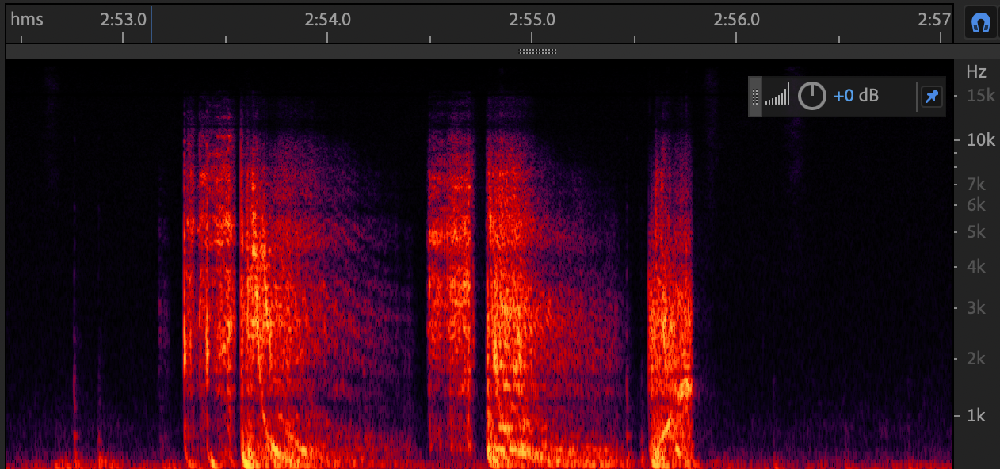
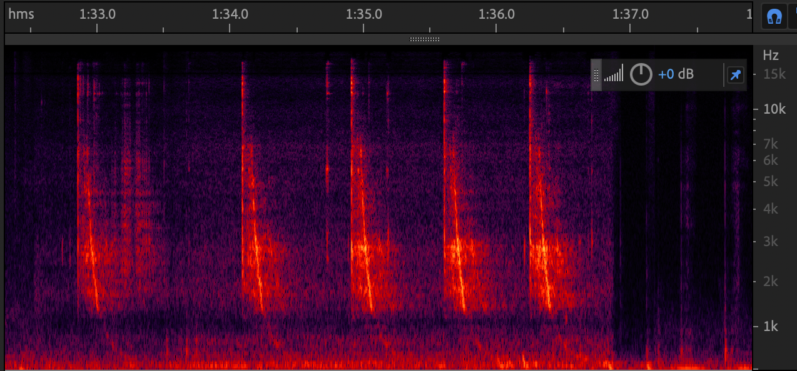
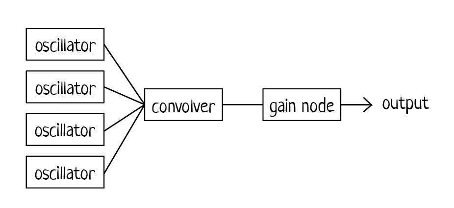

The sound I was trying to recreate was the Star Wars Laser Blaster sound.
There are many versions of the sound in the movies as each gun has a
slightly different quality, but they all share the "pew pew" sound that
starts high pitched and then ends low.
I looked into how to sound was created for the movies and found that the
foley artists used the sound of hitting a long metal power line (or radio
line?) with a mallet. The physics behind it is called dispersion: since different
frequencies travel at different speeds through air and metal, we hear a
change in pitch.
To recreate this sound, I first looked at spectrograms of different
versions of the sound.
The first image is the sound of blasters from the original Star Wars
movies.
The second image is the sound of a power line being hit.


I saw that the sounds all started with a high frequency that quickly
dropped to almost 0 Hz exponentially. This inspired me to use the a sine wave
oscillator that started with a high freqeuncy and then use the
exponentialRampToValueAtTime()
function to ramp down the frequency.
I first started with one oscillator imitating the second image and the sound was already pretty close.
I really liked how the original Star Wars blaster sounds had a low twang while they were being fired.
From observing the spectrograms, there were multiple bands of frequencies that were lowered
consecutively, so I added more oscillators to the sound and lowered them to 0 at different times. The
result was a sound that was very close to the original.
I also added some reverb because it sounded cool.
Below is the spectrogram of the sound I created and the audio signal flow graph. It's just
simple additive synthesis with reverb, but it works. The ADSR envelopes for each of the oscillators
took more trial and error to get the nuancies of the sound right.
